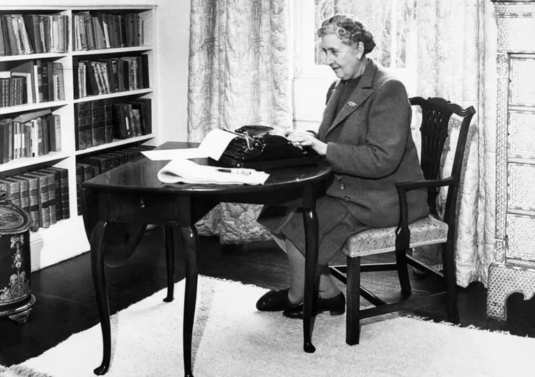
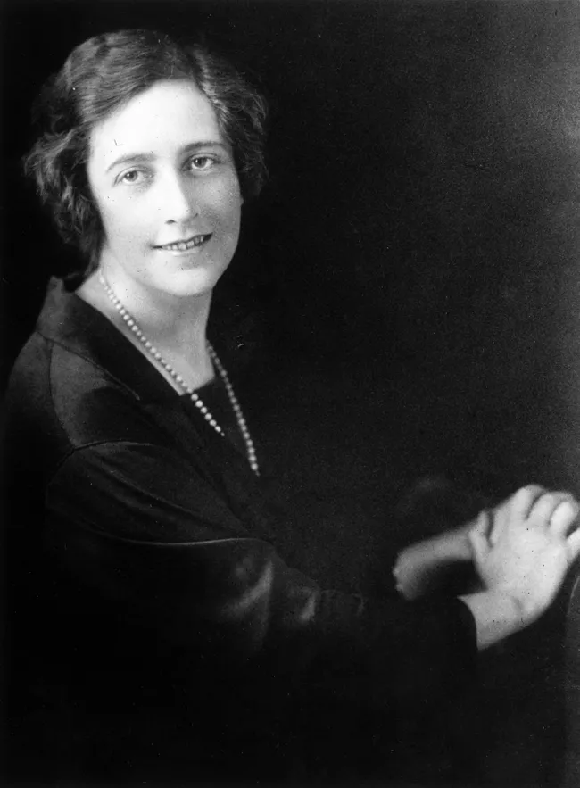
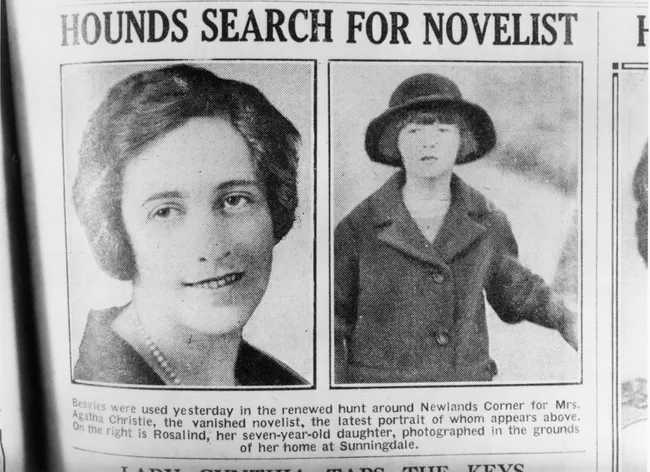
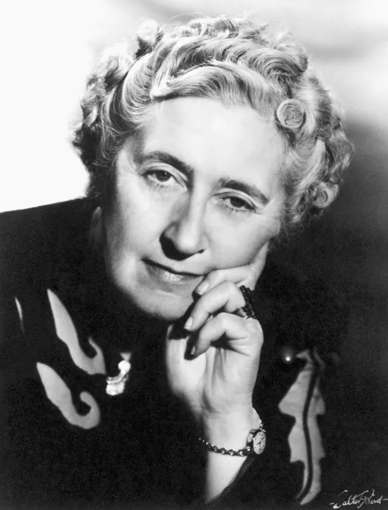
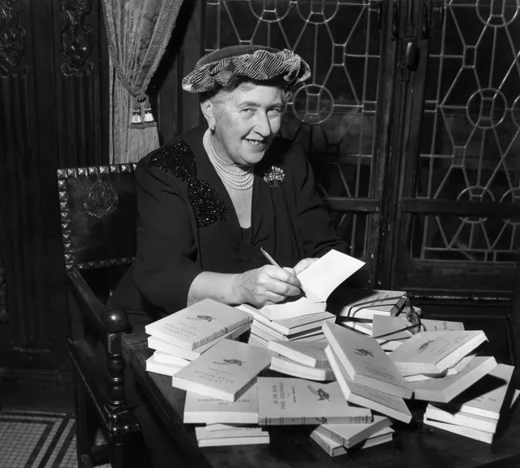
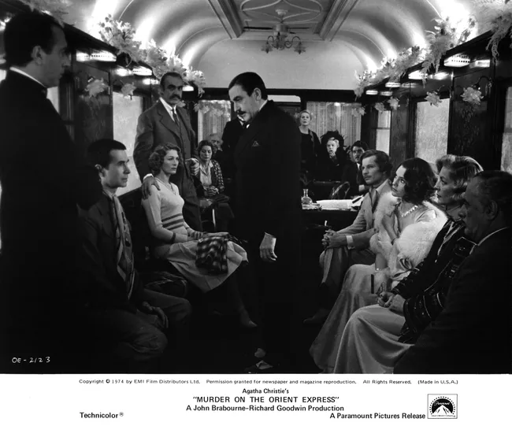

Agatha Christie writing at her desk in 1946.Bettmann/Getty Images
By Amanda Prahl
Updated on July 30, 2021
Agatha Christie (September 15, 1890 – January 12, 1976) was an English mystery author. After working as a nurse during World War I, she became a successful writer, thanks to her Hercule Poirot and Miss Marple mystery series. Christie is the best-selling novelist of all time, as well as the most-translated individual author of all time.
Early Life
Agatha Christie was the youngest of three children born to Frederick Alvah Miller and his wife, Clara Boehmer, a well-off upper-middle-class couple. Miller was the American-born son of a dry goods merchant whose second wife, Margaret, was Boehmer’s aunt. They settled in Torquay, Devon, and had two children before Agatha. Their oldest child, a daughter named Madge (short for Margaret) was born in 1879, and their son, Louis (who went by “Monty”), was born in Morristown, New Jersey, during an 1880 visit to the United States. Agatha, like her sister, was born in Torquay, ten years after her brother.
By most accounts, Christie’s childhood was a happy and fulfilling one. Along with her immediate family, she spent time with Margaret Miller (her mother’s aunt/father’s stepmother) and her maternal grandmother, Mary Boehmer. The family held an eclectic set of beliefs—including the idea that Christie’s mother Clara had psychic abilities—and Christie herself was homeschooled, with her parents teaching her reading, writing, math, and music. Although Christie’s mother wanted to wait until she was eight to begin teaching her to read, Christie essentially taught herself to read much earlier and became a passionate reader from a very young age. Her favorites included the work of children’s authors Edith Nesbit and Mrs. Molesworth, and, later, Lewis Carroll.
Travel, Marriage, and World War I Experience
Christie returned to England in 1910, and, with her mother’s health failing, decided to move to Cairo in hopes that a warmer climate might help her health. She visited monuments and attended social events; the ancient world and archaeology would play a role in some of her later writings. Eventually, they returned to England, just as Europe was drawing nearer to a full-scale conflict.
Christie returned to England in 1910, and, with her mother’s health failing, decided to move to Cairo in hopes that a warmer climate might help her health. She visited monuments and attended social events; the ancient world and archaeology would play a role in some of her later writings. Eventually, they returned to England, just as Europe was drawing nearer to a full-scale conflict.
As an apparently popular and charming young woman, Christie’s social and romantic life expanded considerably. She reportedly had several short-lived romances, as well as an engagement that was soon called off. In 1913, she met Archibald “Archie” Christie at a dance. He was the son of a lawyer in the Indian Civil Service and an army officer who eventually joined the Royal Flying Corps. They fell in love quickly and married on Christmas Eve, 1914.

A portrait of Agatha Christie, circa 1925.
World War I had begun a few months before their marriage, and Archie was sent to France. In fact, their wedding took place when he was home on leave after being away for months. While he was serving in France, Christie worked back at home as a member of the Voluntary Aid Detachment. She worked for over 3,400 hours at the Red Cross hospital in Torquay, first as a nurse, then as a dispenser once she qualified as an apothecary’s assistant. During this time, she encountered refugees, particularly Belgians, and those experiences would stay with her and inspire some of her early writing, including her famous Poirot novels.
Fortunately for the young couple, Archie survived his stint abroad and actually rose through the military ranks. In 1918, he was sent back to England as a colonel in the Air Ministry, and Christie ceased her VAD work. They settled in Westminster, and after the war, her husband left the military and began working in London’s financial world. The Christies welcomed their first child, Rosalind Margaret Clarissa Christie, in August 1919.
Pseudonym Submissions and Poirot (1912-1926)
Before the war, Christie wrote her first novel, Snow Upon the Desert, set in Cairo. The novel was summarily rejected by all the publishers she sent it to, but writer Eden Philpotts, a family friend, put her in touch with his agent, who rejected Snow Upon the Desert but encouraged her to write a new novel. During this time, Christie also wrote a handful of short stories, including “The House of Beauty,” “The Call of Wings,” and “The Little Lonely God.” These early stories, which were written early in her career but not published until decades later, were all submitted (and rejected) under various pseudonyms.
As a reader, Christie had been a fan of detective novels for some time, including Sir Arthur Conan Doyle’s Sherlock Holmes stories. In 1916, she began working on her first mystery novel, The Mysterious Affair at Styles. It was not published until 1920, after several failed submissions and, eventually, a publishing contract that required her to change the ending of the novel and that she later called exploitative. The novel was the first appearance of what would become one of her most iconic characters: Hercule Poirot, a former Belgian police officer who had fled to England when Germany invaded Belgium. Her experiences working with Belgian refugees during the war inspired the creation of this character.
Over the next few years, Christie wrote more mystery novels, including a continuation of the Poirot series. In fact, over the course of her career, she would write 33 novels and 54 short stories featuring the character. In between working on the popular Poirot novels, Christie also published a different mystery novel in 1922, titled The Secret Adversary, which introduced a lesser-known character duo, Tommy and Tuppence. She also wrote short stories, many on commission from Sketch magazine.

A newspaper reports on Christie's infamous disappearance.
It was in 1926 that the strangest moment in Christie’s life occurred: her infamous brief disappearance. That year, her husband asked for a divorce and revealed he’d fallen in love with a woman named Nancy Neele. On the evening of December 3, Christie and her husband argued, and she disappeared that night. After nearly two weeks of public furor and confusion, she was found at the Swan Hydropathic Hotel on December 11, then left for her sister’s home soon after. Christie’s autobiography ignores this incident, and to this day, the actual reasons for her disappearance remain unknown. At the time, the public largely suspected that it was either a publicity stunt or an attempt to frame her husband, but the real reasons remain forever unknown and the subject of much speculation and debate.
Introducing Miss Marple (1927-1939)
In 1932, Christie published the short story collection The Thirteen Problems. In it, she introduced the character of Miss Jane Marple, a sharp-witted elderly spinster (who was somewhat based on Christie’s great-aunt Margaret Miller) who became another of her iconic characters. Although Miss Marple would not take off quite as quickly as Poirot did, she was eventually featured in 12 novels and 20 short stories; Christie reputedly preferred writing about Marple, but wrote more Poirot stories to meet public demand.
The following year, Christie filed for divorce, which was finalized in October 1928. While her now-ex husband almost immediately married his mistress, Christie left England for the Middle East, where she befriended archaeologist Leonard Woolley and his wife Katharine, who invited her along on their expeditions. In February 1930, she met Max Edgar Lucien Mallowan, a young archaeologist 13 years her junior who took her and her group on a tour of his expedition site in Iraq. The two fell in love quickly and married just seven months later in September 1930.

Portrait of Agatha Christie later in life, date unknown.
Christie often accompanied her husband on his expeditions, and the locations they visited frequently provided inspiration or a setting for her stories. During the 1930s, Christie published some of her best-known works, including her 1934 Poirot novel Murder on the Orient Express. In 1939, she published And Then There Were None, which remains, to this day, the best-selling mystery novel in the world. Christie later adapted her own novel for the stage in 1943.
World War II and Later Mysteries (1940-1976)
The breakout of World War II did not stop Christie from writing, although she split her time working at a pharmacy at University College Hospital in London. As a matter of fact, her pharmacy work ended up benefitting her writing, as she learned more about chemical compounds and poisons that she was able to use in her novels. Her 1941 novel N or M? briefly placed Christie under suspicion from MI5 because she named a character Major Bletchley, the same name as a top-secret codebreaking operation’s location. As it turned out, she had simply been stuck nearby on a train and, in frustration, gave the place’s name to an unlikeable character. During the war, she also wrote Curtains and Sleeping Murder, intended as the last novels for Poirot and Miss Marple, but the manuscripts were sealed away until the end of her life.
Christie continued writing prolifically in the decades after the war. By the late 1950s, she was reportedly earning around ₤100,000 per year. This era included one of her most famous plays, The Mousetrap, which famously features a twist ending (subverting the usual formula found in most of Christie’s works) that audiences are asked to not reveal when they leave the theater. It is the longest-running play in history and has been running continuously on the West End in London since its debut in 1952.

Agatha Christie signs French translations of her books in 1965.
Christie continued writing her Poirot novels, despite growing increasingly tired of the character. Despite her personal feelings, though, she, unlike fellow mystery writer Arthur Conan Doyle, refused to kill off the character because of how beloved he was by the public. However, 1969’s Hallowe’en Party marked her final Poirot novel (although he did appear in short stories for a few more years) aside from Curtains, which was published in 1975 as her health declined and it became increasingly likely that she would write no more novels.
Literary Themes and Styles
One subject that frequently appeared in Christie’s novels was the topic of archaeology—no real surprise, given her own personal interest in the field. After marrying Mallowan, who spent large amounts of time on archaeological expeditions, she often accompanied him on trips and assisted with some of the preservation, restoration, and cataloging work. Her fascination with archaeology—and, specifically, with the ancient Middle East—came to play a major role in her writings, providing everything from settings to details and plot points.
In some ways, Christie perfected what we now consider the classic mystery novel structure. There is a crime—usually a murder—committed at the beginning, with several suspects who all are concealing secrets of their own. A detective slowly unravels these secrets, with several red herrings and complicating twists along the way. Then, at the end, he gathers all the suspects (that is, the ones who are still alive), and gradually reveals the culprit and the logic that led to this conclusion. In some of her stories, the culprits evade traditional justice (although adaptations, many subject to censors and morality codes, sometimes changed this). Most of Christie’s mysteries follow this style, with a few variations.

A still from the 1974 film version of 'Murder on the Orient Express'.
In hindsight, some of Christie’s works embraced racial and cultural stereotypes to an occasionally uncomfortable degree, particularly with regard to Jewish characters. That being said, she did often portray “outsiders” as potential victims at the hands of British villains, rather than placing them into the roles of villain. Americans, too, are the subject of some stereotypes and ribbing, but overall do not suffer from wholly negative portrayals.
Death
By the early 1970s, Christie’s health began to fade, but she kept writing. Modern, experimental textual analysis suggests that she may have begun suffering from age-related neurological issues, such as Alzheimer’s disease or dementia. She spent her later years living a quiet life, enjoying hobbies such as gardening, but continuing to write until the last years of her life.
Agatha Christie died of natural causes at age 85 on January 12, 1976, at her home in Wallington, Oxfordshire. Before her death, she made burial plans with her husband and was buried in the plot they purchased in the churchyard of St. Mary's, Cholsey. Sir Max survived her by about two years and was buried beside her upon his death in 1978. Her funeral attendees included reporters from around the world, and wreaths were sent by several organizations, including the cast of her play The Mousetrap.
Legacy
BAlong with a few other authors, Christie’s writing came to define the classic “whodunit” mystery genre, which persists to this day. A large number of her stories have been adapted for film, television, theater, and radio over the years, which has kept her perpetually in popular culture. She remains the most popular novelist of all time.
Christie’s heirs continue to hold a minority stake in her company and estate. In 2013, the Christie family gave their "full backing" to the release of a new Poirot story, The Monogram Murders, which was written by British author Sophie Hannah. She later released two more books under the Christie umbrella, Closed Casket in 2016 and The Mystery of the Three Quarters in 2018.
Sources
Mallowan, Agatha Christie. An Autobiography. New York, NY: Bantam, 1990.
Prichard, Mathew. The Grand Tour: Around The World With The Queen Of Mystery. New York, US: HarperCollins Publishers, 2012.
Thompson, Laura. Agatha Christie: A Mysterious Life. Pegasus Books, 2018.